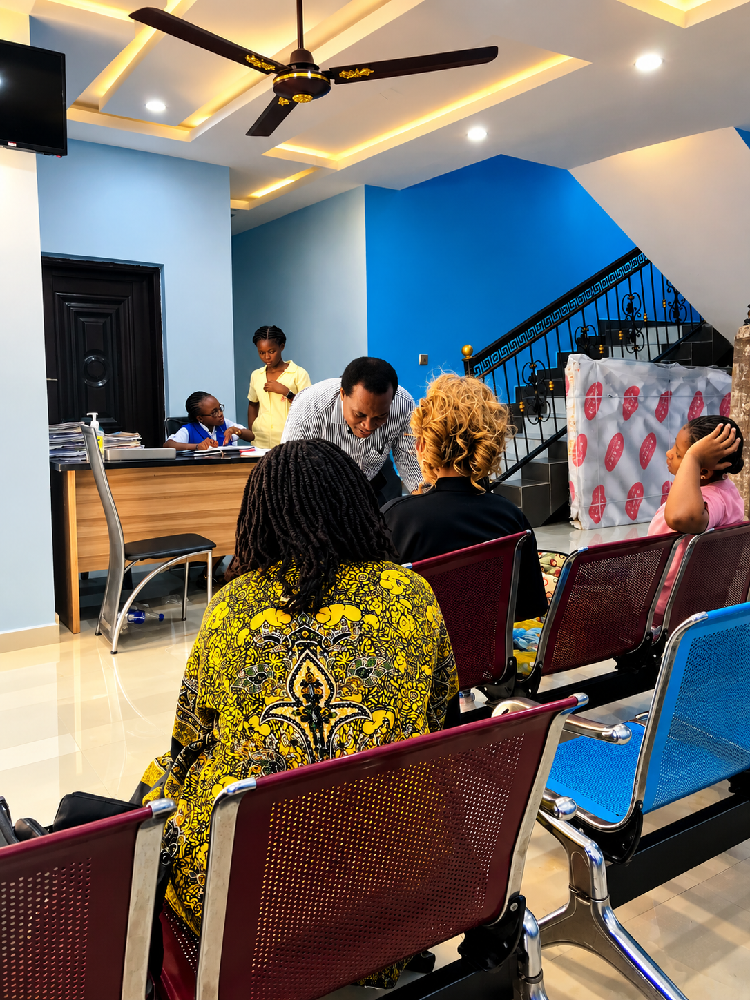

Godly Care Specialist Hospital
Quality healthcare system.
Compassionate, dependable healthcare for patients and families, delivered by experienced professionals in a safe and welcoming environment.
Compassionate, dependable healthcare for patients and families, delivered by experienced professionals in a safe and welcoming environment.
From consultation and diagnostics to treatment and recovery, we keep your needs at the centre of the care journey.
Explore clinical spaces and diagnostic capabilities designed to support safe, efficient and comfortable patient care.
At Godly Care Specialist Hospital, we combine medical expertise, modern technology and compassionate service to provide dependable healthcare for our patients and their families.

Access clinical, diagnostic and supportive services through a coordinated care team.
Consultations, reviews and treatment for everyday and ongoing health needs.
Learn more →Responsive emergency support with clinical assessment and coordinated care.
Learn more →Support for mothers, newborns and children across key stages of care.
Learn more →Laboratory and imaging services supporting timely clinical decisions.
Learn more →Comprehensive antenatal care supporting a healthy pregnancy, monitoring mother and baby, and preparing you confidently for childbirth
Learn more →We Offer Dedicated care for women’s reproductive health, from routine wellness to specialized treatment..
Learn more →Comfortable inpatient support with coordinated nursing and medical care.
Learn more →Medication support and counselling as part of your treatment journey.
Learn more →Our care experience is built around professionalism, communication, safety and continuity.
Consultants, doctors and nurses working together across different areas of care.
Clinical and diagnostic tools supporting accurate assessment and informed decisions.
Clear explanations, respectful communication and care planning around patient needs.
Clean, welcoming spaces designed with privacy, comfort and efficient patient flow in mind.
Diagnostic support that helps clinicians make timely and informed care decisions.
Attention to infection control, medication safety and consistent clinical processes.
Practical health information and guidance for patients and families.

Simple, sustainable habits can help people take a proactive approach to their health.
Read Article →
Learn why certain symptoms should be assessed promptly rather than ignored.
Read Article →
A few practical steps can make a consultation more organised and productive.
Read Article →A look at selected spaces and facilities supporting a comfortable patient experience.
Request an appointment online and our team will contact you to confirm the details.